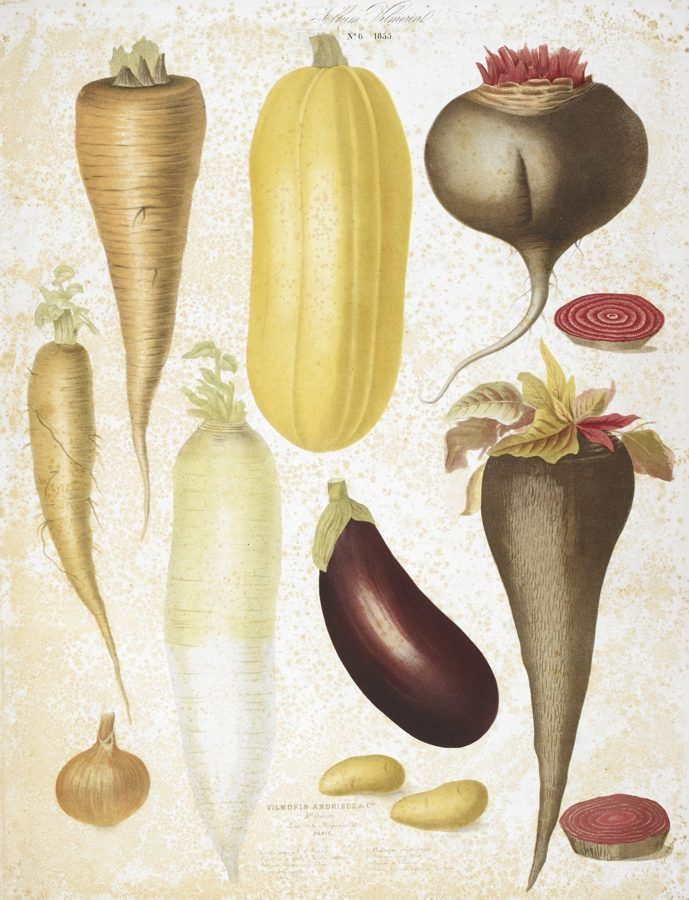
Parte I · La semilla
Los Primeros Pasos
- La tierra está viva
- Dónde poner el huerto
- Macetas y cajones: el tamaño sí importa
- Semilla o plantín
- El riego que no mata
- El compost del viejo
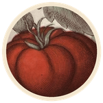
El Tomate TercoLa tierra no tiene prisa · El camino del huerto
Cuarenta años de huerto en casa, sin venenos y sin prisa, contados con calma por un viejo terco que aprendió equivocándose. Desde la primera maceta del balcón hasta un huerto que se cuida casi solo.
Quiero el e-bookE-book en PDF · acceso inmediato · se lee en el celular
US$ 5,90 pago único
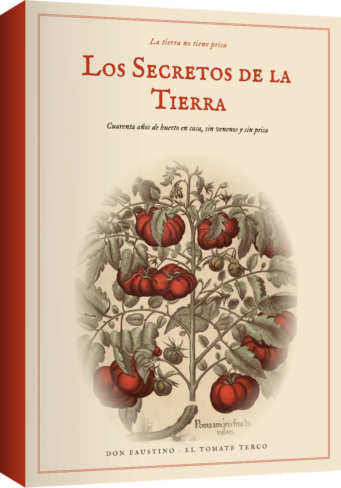
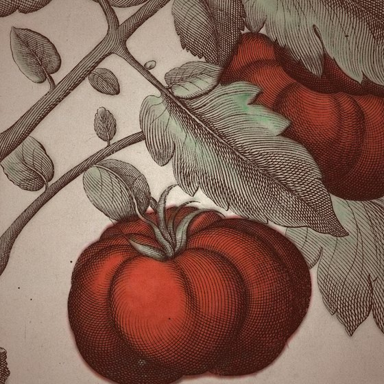
LaHortulanus · Quién escribió
¡Buenas, vecino! Me llamo Faustino. Tengo setenta años y llevo cuarenta con las manos metidas en la tierra. No soy ingeniero agrónomo: soy un viejo terco que aprendió a fuerza de equivocarse.
A los treinta compré una planta de tomate en la feria, la llené de abono químico y de agua «para que crezca». En dos semanas estaba muerta. Doña Remedios, mi vecina de más de ochenta años, la miró, se rio y me dijo la frase que me cambió la vida:
«No alimentes la planta, vecino. Alimenta la tierra. La planta se cuida sola.» — doña Remedios
Volví a su huerto casi todos los domingos durante años. Me regaló un puñado de semillas de tomate que hoy, más de treinta años después, siguen vivas en mi patio: La Terca. Este libro junta lo que ella me enseñó y lo que aprendí después.
Index · Lo que hay dentro
Tres partes, en el orden correcto: primero lo que todo principiante necesita saber, después la rutina que mantiene el huerto sano todo el año y, por último, quince plantas explicadas una por una.

Parte I · La semilla
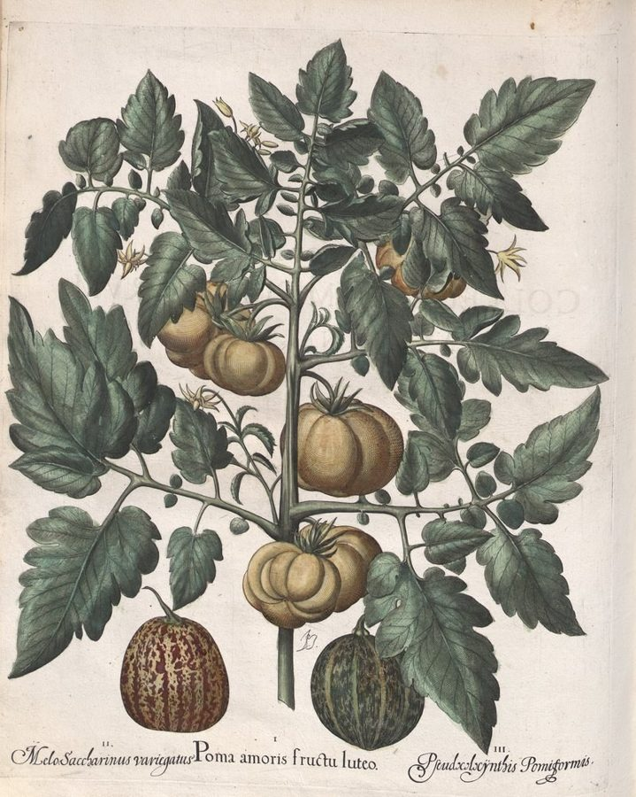
Parte II · La raíz
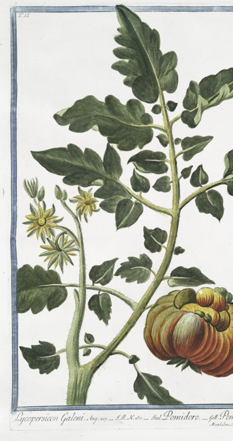
Parte III · El fruto
Folium · Por dentro
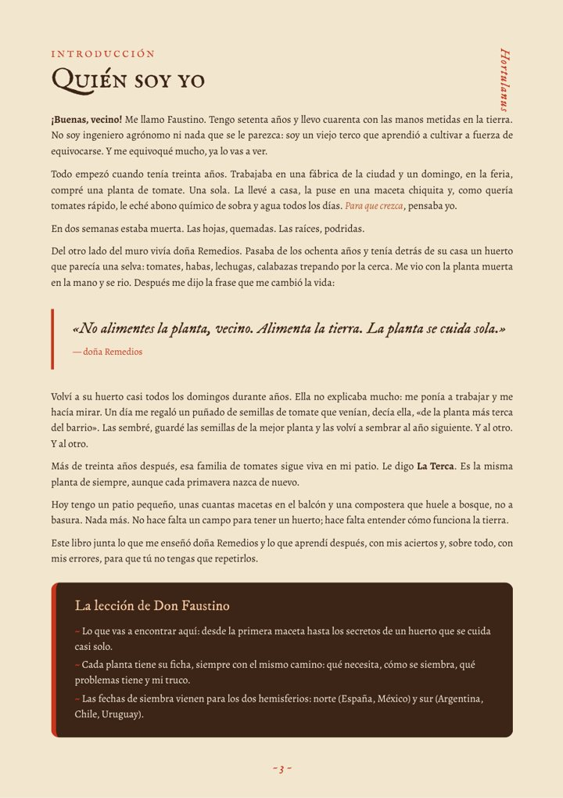
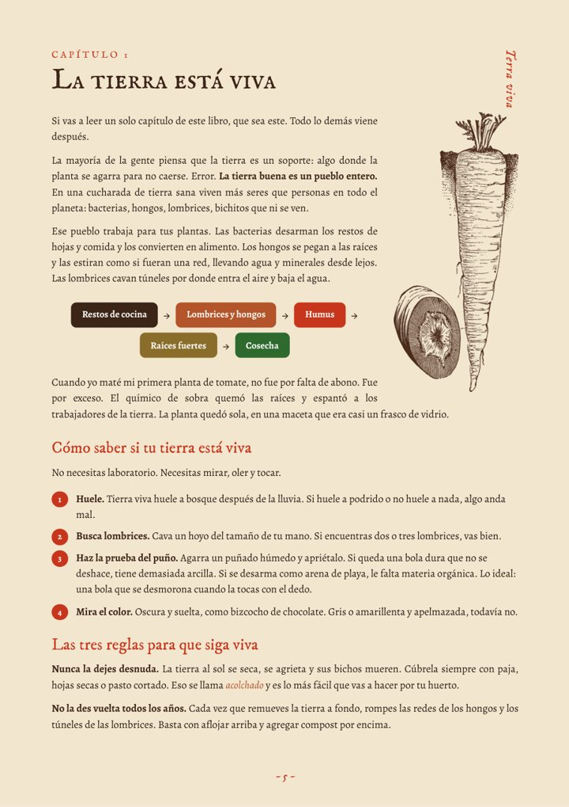
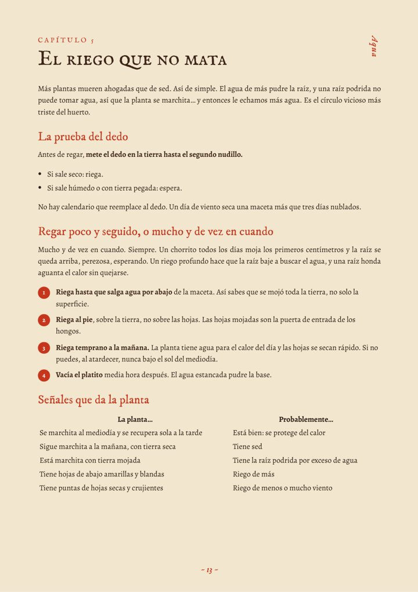
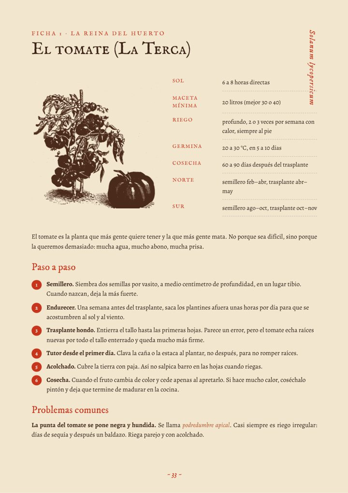
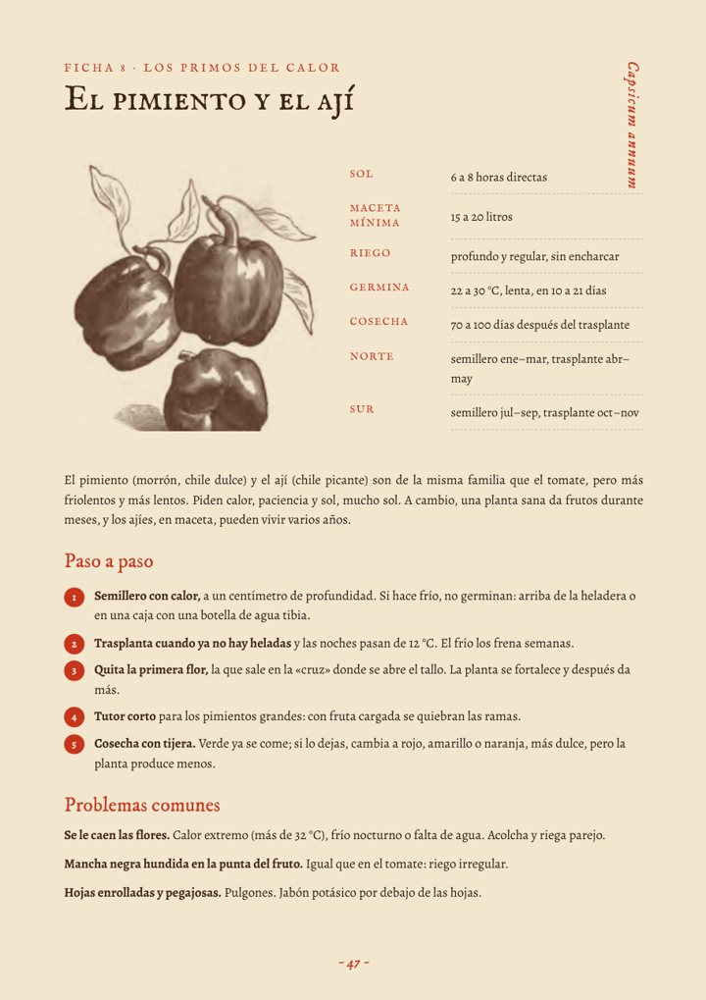
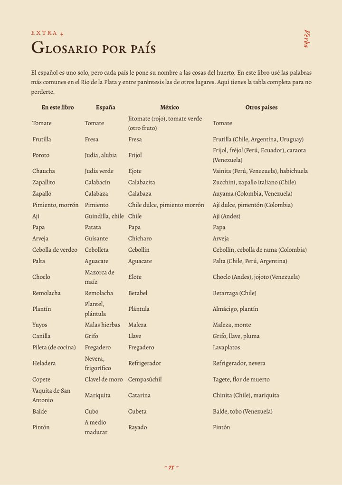
Lectio · Las enseñanzas
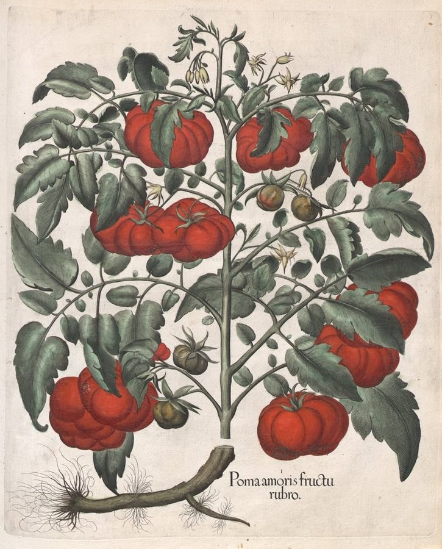
Dona · Regalos para el vecino
Quaestiones · Dudas
Apenas se confirma el pago, te llega un correo con el acceso. Puedes descargar el PDF y leerlo en el celular, la tableta o la computadora, o imprimirlo.
Justamente para eso está hecho. La Parte I empieza desde cero: dónde poner las macetas, qué tierra usar, cómo regar sin ahogar. No necesitas patio: un balcón con sol alcanza.
Si ya cultivas, vas a ir directo a las fichas de cada planta, a los remedios sin veneno, a la lectura de las hojas y a cómo guardar tus propias semillas.
Sí. Todas las fechas de siembra vienen para los dos hemisferios: norte (España, México) y sur (Argentina, Chile, Uruguay). Y el glosario traduce los nombres de cada país.
77 páginas ilustradas con grabados botánicos antiguos: 16 capítulos, 15 fichas de plantas y 4 extras.
Tienes 7 días de garantía. Si no te gusta, pides el reembolso desde la propia plataforma de pago y te devuelven el dinero.
77 páginas ilustradas, 16 capítulos, 15 fichas de plantas y la sabiduría de una huertera de noventa años, de la primera maceta a tu propia semilla.
US$ 5,90 pago único
Quiero mi e-book ahora7 días de garantía · pago seguro por Kiwify